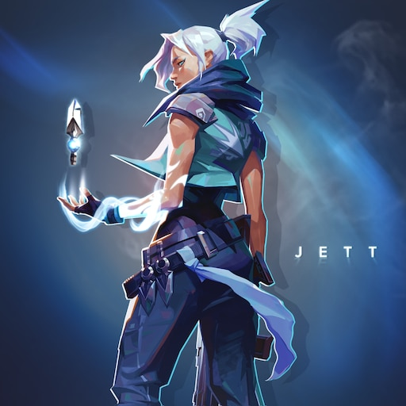
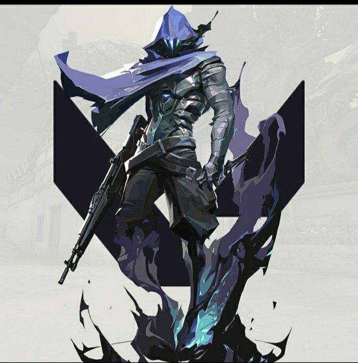
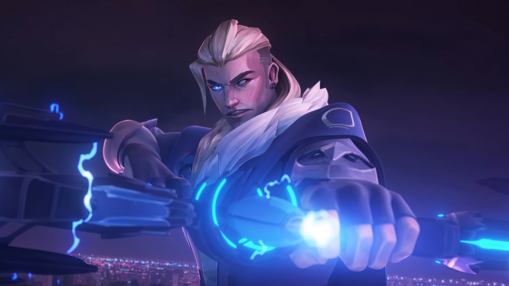
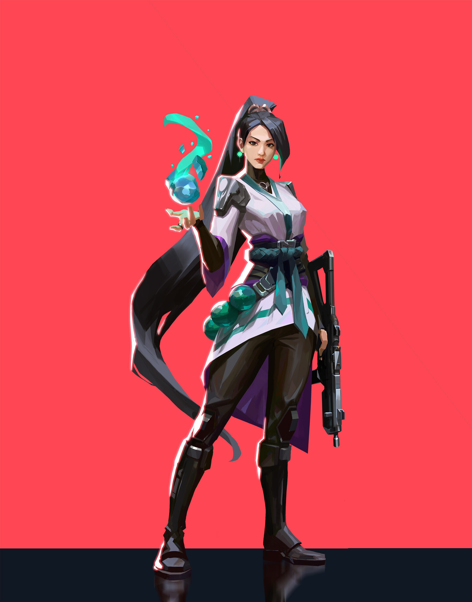

Os agentes são os personagens jogáveis de Valorant. Cada agente possui habilidades únicas e pertence a uma função dentro da equipe.
Os Duelistas são agentes focados em iniciar confrontos e conseguir eliminações. Eles possuem habilidades que ajudam a entrar nos locais e criar oportunidades para a equipe. Como, por exemplo, a jett.

Os Controladores são responsáveis por controlar áreas do mapa. Suas habilidades podem criar fumaças e dificultar a visão dos adversários, ajudando a equipe a avançar ou defender uma posição. Como, por exemplo, o omen.

Os Iniciadores ajudam a equipe a conseguir informações e iniciar confrontos. Suas habilidades podem revelar inimigos, atordoá-los ou forçá-los a sair de determinadas posições. Como, por exemplo, o sova.

As Sentinelas são especializadas em defesa e controle de áreas. Elas podem proteger posições, detectar inimigos e dificultar ataques adversários. Como, por exemplo, a sage.
